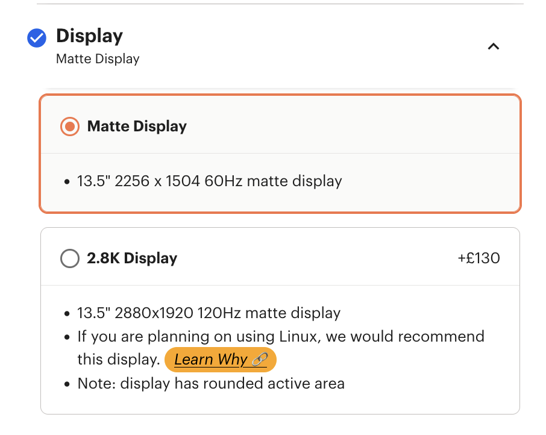
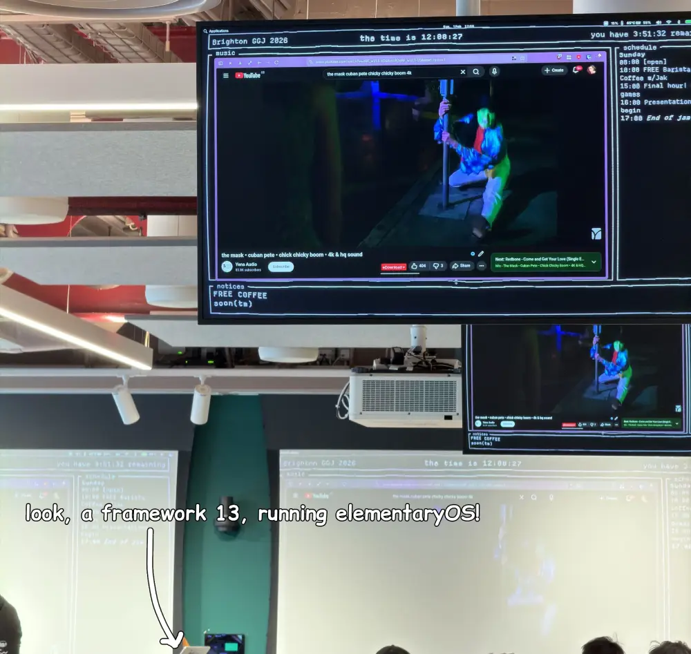

Framework? I sure hope it does
heads up: this blog post sat in my drafts for a good few months. I've edited bits throughout to kind of reflect how I think of this laptop after a year. that said, this has mostly been a scrappy markdown file that I've kept revisiting every few months, so the timelines may be a bit wonky, and the writing isn't my best work. hopefully it helps someone out!
Intro
For those who are unfamiliar - Framework is the little laptop company that makes repairable laptops. I am an owner of one of these laptops - with my spec costing me £855.00. With RAM and SSD, this came to £1021.96 (pre-RAM shortage).
| Item | Price |
|---|---|
| Laptop + Mainboard (Ryzen 5 7640U, RZ616 WiFi) | £784.00 |
| Bezel (Lavender), Keyboard (International English - Linux), Expansion Cards (2x USB-C, USB-A, HDMI) | £71.00 |
| 32GB DDR5 5600MHz RAM | £61.97 |
| WD_BLACK SN770 2TB | £104.99 |
| Total | £1,021.96 |
again - this is pre-RAM shortage - nowadays that DDR5 kit would cost you £299.95, and the SSD is £265.00
I bought this laptop after seeing pretty good reviews, with the intention of using it for:
- Light game development & programming
- Reading emails
- Watching Dropout/Nebula/streaming service of choice in bed
After using it on and off for over a year now... I have *thoughts* on whether you should buy one of these laptops. I'll be breaking this down into three categories - specifically The Good (things I like), The Bad (bad things that are just bad for everyone), and The Ugly (things that are bad for me, personally).
The Good
Repairability (duh). This is an obvious point, but, being able to upgrade the storage and RAM is a huge deal, and I hope Framework's efforts push other manufacturers to start desoldering things, or at least providing extra capabilities - e.g. alongside the soldered storage, having an unpopulated space for an NVME SSD. If I have to take a personal laptop with me on a flight, I'll probably take this one - because at least if it gets dented up during airport security, I can buy replacement parts.
The keyboard is pretty OK; not the best I've used, but it's also way above the worst I've used... This is fairly uncommon for Windows laptops, so, thought I'd mention!
Fingerprint sensor! Really great, I much prefer fingerprints to Face ID / Windows Hello; it's fast, it's reliable, and it doesn't require me to have my camera turned on.
On the note of cameras - camera & mic hardware switches are a lovely privacy feature, and I hope it becomes more mainstream.
The Bad
The speakers. It is honestly impressive just how poor they are – my PS Vita from 2012 sounds better than this thing. I would be strangely impressed at the poor quality if not for the fact I paid £1000+ for this device (with RAM and SSD), and laptops friends of mine have that cost 1/3 as much perform about the same. If you're planning on streaming in bed, I'd recommend pairing some earbuds.
On the note of streaming - the built-in wifi card isn't great. It's totally serviceable, but the range is noticeably worse than my other devices. Through the grapevine, I have heard replacing the provided AMD wifi card with an Intel one provides a much better experience, but again - you're spending more money on what is already in the premium tier of laptops.
The trackpad is also subpar, even for Windows laptops. The trackpad is placed within the chassis such that holding the device by the corner can force a click on the trackpad. This may sound minor, but it means if you hold the laptop by the edge while moving between rooms (e.g. because you have something else in your other hand already!), it will do things like pause videos or click random buttons.
Battery life is on the shorter side for x86-64, and comical compared to ARM laptops. Some of this is to be expected (e.g. the space you lose for repairability has probably come out of the battery), but again - it's a case where spending half as much on a laptop will probably net you better results!
Related to battery; the thermals on this machine aren't great. It's not scientific, but, it's to the point that as I type this (with VS Code, Discord and Zen running) the laptop is warm enough it's uncomfortable to have on top of the leggings I'm wearing, and painful on bare skin. If you are the kind of person that always wears jeans then you'll probably never notice this, but if I'm wearing a dress/skirt with leggings underneath then I'll often try to put something between my lap and the laptop.
The Ugly
This is where we get into things that are probably just a me problem, and may not impact you.
First - I used to get random reboots, driver crashes, or the display server restarting; initially I suspected this was due to high GPU workloads, but I've had the graphics device crash just scrolling my emails, or having a couple copies of Zed open on virtual desktops.
This seems to have gotten better now (especially since I moved from Fedora to elementaryOS). That said - when this was a problem, it meant the laptop was pretty much unusable for much of my daily workflow.
The replaceable ports are a fun idea in principle, but, I've also found them to be very flaky. I've already gone through one USB-A port after owning the machine for a few months, and I don't use it that often. Granted, I can replace the port incredibly easily, but, I'd also expect a USB-A port to last far longer.
Finally - we have to chat about Windows & Linux.
For reference here - at work, I use all three OSes. This is split between:
- An M2 Max MacBook Pro (edit: I now use an M3 Max MBP at work)
- A Plastic Alienware Thing with an NVidia RTX card in it
- This runs both Windows & Ubuntu 24.04, but it's usually booted into Windows
- It also usually spends its time connected to a monitor, as said NVidia GPU drains the battery in ~an hour
- A slightly older tower running Ubuntu 24.04
Now - I mention this to explain I am in a luxury(? debatable) of pretty much always being exposed to all three major OSes... albeit not in a laptop form factor.
As for Windows - I, frankly, detest what it has become. My complaints will be similar to what you've likely already heard - a stock install of Windows 11 showed me ads for Harry Potter on the lock screen (💀 thanks Microsoft, can't wait to see you at the Pride parade), prompted me to use Copilot when opening notepad (which then hung), and forced me to do some shenanigans during setup to skip an account sign in.
On this - big shoutout to Framework for documenting what you needed to do during setup to skip sign-in. Very handy, especially considering their target audience :)
However, Windows is getting better at gesture support, and it is also where a lot of my favorite tools live (I love toying around in Gaea, and Superluminal is One Of Those tools that I'll suffer through the rest of Windows to keep using).
My negative opinions on Windows are, in the bubble of online people writing about tech, not that controversial. The issue is, the default configuration of the Framework Laptop makes Linux incredibly painful.
I will not recount the tale of Linux & fractional screen scaling but - to put it simply, despite Wayland now technically having support for fractional scaling, fractional scaling is still pretty painful.
Part of this is a huge amount of Linux apps are stuck on GTK3, or stuck using XWayland and do not have the engineering capacity to make the upgrades necessary to support fractional scaling. This means that while the compositor and hyper-popular apps in the OSS ecosystem will work, many essential programs you rely on could look blurry, small, or just downright weird.
When I bought my FW13, I initially opted for the base screen (as, it cost 10% more to jump to the 2.8K display). If, after this post, you decide a FW13 is for you: do not make this same mistake. Just get the 2.8K display. It's 120Hz, but more importantly, 2880x1920 integer scales to 1440x960 (which, those of you who used MacBook Airs in the 2010s will recognise pretty quickly!). It makes the Linux experience so much nicer (and the Windows experience too, given fractional scaling is still janky there, albeit not to the same degree).
This is 100% on me, but, I hope Framework adds in some links, referencing the base screen will not play well with screen scaling; see below for a quick mockup of what this could look like

Who is a Framework Laptop for?
What I said when I first wrote this blog post (several months ago!) was the following: You should buy a Framework laptop if you:
- Like the ability to repair your devices
- Work in a field where being able to add more RAM later is very helpful
- Wear headphones all the time
- Only use external mice
- Don't wear dresses or shorts, or, tend to always use your laptop on a desk
- Are generally near a wall outlet
At this point, I should mention that I buy laptops because, frankly, I hate the room taken up by a desktop PC, and I like being able to go sit in a cafe and work on a project for an hour or so. The issue is, the Framework laptop is at its best when you don't use it as a laptop; as a quirky small form factor PC, it is a great machine.
At this point, I need to bring up the DHH/Omarchy/Hyprland connections. I do not think I can do a good summary of this situation (and I - a transgender woman - do not particularly want to deal with the harassment that may come my way if I do), but:
- I do not think Framework itself are far-right
- DHH absolutely is, given he expresses support for Yaxley-Lennon (a man whose misinformation was responsible for the 2024 racist riots & arson attacks here in the UK)
- Framework's willingness to go anywhere near DHH to begin with makes me doubt their seriousness as a company, and I cannot in good faith recommend you buy their computers
Even if none of that controversy came up... I would still suggest that if you are a technical person, and want a FW13 anyway, you'd probably be better off buying a secondhand ThinkPad or M1 MacBook Air.
Going for the Air - looking at BackMarket, you can buy a decent condition M1 Air with 512GB of storage and 16GB of RAM for ~£600. This costs less than just the mainboard of this machine (sans any RAM or storage!) and these are machines that:
- Can boot third party OSes (shoutout Asahi Linux)
- Have much better speakers, trackpads & battery life
- Still show up at game jams as a light hobby project machine
If you need more power, a used M1 Pro will cost you about as much as a FW13 will, once you add 32GB of RAM and a 1TB SSD, and will run rings round the FW13 for most things you'll do on it.
With this all said - and here's the bit that I cannot explain - I do like the FW13! It's fun having a laptop where upgrading the screen is a matter of a few screws, and it's come in clutch precisely when I needed it most - see below for when it ran my Global Game Jam site's screens for a couple of days running.

As an aside: elementaryOS is really quite excellent. If you're looking at a Linux distro designed for human beings, give it a look!
But - right now, it's hard to justify as anything but a device for enthusiasts, that has connections to the kind of people who make me ashamed of the UK right now. I do hope Framework continue to stick around, and prove themselves to be a serious business selling serious laptops that are usable as laptops.